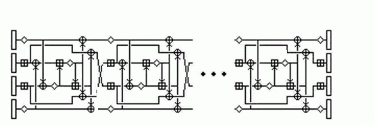
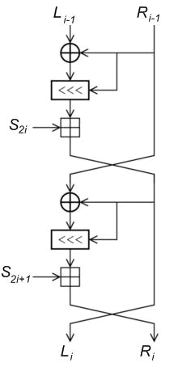

U naredna dva poglavlja spomenut ćemo neke kriptosustave koji se
koriste kao zamjena za DES, te kriptosustave koji bi trebali
i službeno zamijeniti DES. U ovom poglavlju obradit ćemo
Trostruki DES (Triple DES, 3DES), IDEA, CAST-128 i RC5, dok ćemo
u narednom poglavlju reći nešto o finalistima natječaja za
nasljednika DES-a.
Prije nego što kažemo nešto o Trostrukom DES-u, odgovorimo na pitanje
zašto se ne koristi "Dvostruki DES". Kod Dvostrukog DES-a
bi svaki blok šifrirali dvaput, s dva različita ključa
K i L:
y = eL(eK(x)), x = dK(dL(y)).
Kako smo već napomenuli, DES nije grupa, pa se čini da smo
ovako dobili znatno sigurniji kriptosustav. Međutim, postoji
nešto što se zove napad "susret u sredini", koji je opisao
Diffie 1977. godine. Pretpostavimo da je poznat jedan par
otvoreni tekst-šifrat (x,y). Šifriramo x sa svih
256 mogućih ključeva K. Spremimo rezultate u
tablicu i sortiramo ih po vrijednostima od z =
eK(x). Zatim dešifriramo y
koristeći svih 256 mogućih ključeva L. Nakon svakog
dešifriranja, potražimo rezultat u tablici. (Naime, treba vrijediti
z = dL(y).) Ako ga
pronađemo, onda tako dobiveni par (K,L) testiramo
na sljedećem poznatom paru otvoreni tekst-šifrat. Ako prođu taj test,
prihvaćamo ih za korektne ključeve. Vjerojatnost da smo pogriješili
je 2112-64-64 = 2-16. Na taj način dobivamo
da je za razbijanje Dvostrukog DES-a broj operacija
reda 256, što je neznatno više nego za obični DES.
Jedna od najpopularnijih zamjena za DES je Trostruki DES
(koriste se još i nazivi Triple DES i 3DES):
y = eM(dL(eK(x))), x = dK(eL(dM(y))).
Ovdje je ključ duljine 56 · 3=168 bitova. Često se koristi i
verzija u kojoj je M = K, pa je u njoj duljina ključa
56 · 2=112, no za nju postoje neki, još uvijek nedovoljno praktični napadi,
koji koriste njezinu specifičnu strukturu.
Razlog za kombinaciju "ede" je kompatibilnost s običnim
DES-om: dovoljno je staviti L = M ili K = L. Za Trostruki DES
broj operacija kod napada "susret u sredini" je reda
2112 ≈ 5 · 1033
dok je kod diferencijalne kriptoanalize
procijenjen na 1052. Možemo reći da je sigurnost kod
trostrukog šifriranja upravo onakva kakvu bismo možda naivno
očekivali kod dvostrukog. U svakom slučaju, sigurnost 3DES-a je
danas i više nego zadovoljavajuća.
IDEA (International Data Encryption Algorithm) je kriptosustav
koji su razvili švicarski kriptografi
Xuejia Lai
i James Massey s ETH Zürich. Prvu verziju zvanu PES
(Proposed Encryption Standard) su objavili 1990. Međutim,
taj kriptosustav nije bio otporan na diferencijalnu kriptoanalizu
(za 128-bitni ključ je trebalo 264 operacija), pa su
nakon Biham-Shamirovog otkrića, autori 1992. godine prepravili
algoritam i nazvali ga IDEA.
IDEA koristi 128-bitni ključ za šifriranje 64-bitnih blokova otvorenog
teksta. Koristi tri operacije na 16-bitnim podblokovima:
XOR (oznaka ⊕),
zbrajanje modulo 216 (oznaka ⊞),
množenje modulo 216 + 1 (oznaka ⋄).
Množenje se ovdje može smatrati analogonom S-kutija u DES-u.
Modul 216+1 je odabran
zbog efikasnije implementacije modularnog množenja.
Ove tri operacije
su inkompatibilne, u smislu da nikoje dvije ne zadovoljavaju
zakone asocijativnosti i distributivnosti. IDEA ima 8 rundi i
završnu transformaciju. U njima se koristi 52 16-bitnih međuključeva
generiranih pomoću polaznog 128-bitnog ključa.

CAST-128 (koristi se još i naziv CAST5) su dizajnirali kanadski kriptografi
Carlisle Adams i
Stafford Taraves 1993. godine.
CAST šifrira 64-bitne blokove otvorenog teksta koristeći ključ čija
duljina može varirati od 40 do 128 bitova. CAST je, isto kao i DES,
primjer Feistelove šifre sa 16 rundi. Dvije su razlike od klasične
Feistelove šifre:
dva međuključa u svakoj rundi: 32-bitni Kmi i
5-bitni Kri;
funkcija f ovisi o rundi.
Osnovne operacije u CAST-u su:
XOR,
zbrajanje i oduzimanje modulo 232,
lijeva ciklička rotacija od a za b bitova (oznaka a <<< b).
RC5 algoritam je izumio Ron Rivest 1994.
godine. Zapravo to je cijela familija algoritama određena s tri parametra: w - duljina riječi u bitovima = 16, 32, 64 r - broj rundi = 0, 1, ... , 255 b - broj bajtova u ključu = 0, 1, ... , 255
Obično se koristi verzija sa w = 32, r = 12,
b = 12.
Osnovne operacije u RC5 su:
XOR,
zbrajanje i oduzimanje modulo 2w,
lijeva i desna ciklička rotacija
(a <<< b, a >>> b).
U šifriranju se koristi 2r+2 32-bitnih riječi
S0, S1, ... ,
S2r+1 koje ovise o ključu K.
Najprije se ključ
K0...Kb-1 od b
bajtova prebaci u
niz od c riječi
M0...Mc-1
(ako b nije višekratnik od w, onda se dodaju nule).
Zatim se Si-ovi inicijaliziraju koristeći
pseudoslučajne veličine
Pw = Odd [(e - 2) 2w],
Qw = Odd
[(φ - 1)
2w],
gdje je e baza prirodnog logaritma,
φ =
(1 + √5)/2
omjer zlatnog reza, a funkcija Odd zaokruživanje na najbliži neparni
broj. Za w = 32 je Pw = B7E15163,
Qw = 9E3779B9.
Inicijalizacija: S = Pw,
Si = Si-1 +
Qw, i = 1, 2, ... , 2r+1.
Procedura: i = j = X = Y = 0,
n = 3 max (2r+2, c) do 3ntimes Si =
(Si + X + Y) <<< 3,
X = Si, i = i + 1
(mod 2r+2), Mj =
(Mj + X + Y) <<< (X + Y),
Y = Mj, j = j + 1
(mod c).
Kod šifriranja, najprije podijelimo blok otvorenog teksta na dvije
w-bitne riječi A i B. Zatim se primjeni algoritam:
L0 = A + S0,
R0 = B + S1, fori = 1 tordo Li =
((Li-1
⊕
Ri-1) <<< Ri-1) +
S2i Ri =
((Ri-1
⊕
Li) <<< Li-1) +
S2i+1.

Primijetimo da se u svakoj rundi mijenjaju obje polovice podatka.
Stoga se jedna runda RC5 može na neki način smatrati ekvivalentom
za dvije runde DES-a. To donekle objašnjava zašto RC5 s 12 rundi postiže
slične efekte za koje je 3DES-u potrebno čak 48 rundi.
Naziv RC5 sugerira da je to jedan iz niza kriptosustava (RC dolazi od "Rivest Cipher").
Zaista, postoje RC2, RC4 i RC6 kripotsustavi (RC1 i RC3 su bile radne verzije).
Dok su RC2 i RC6 slični RC5, kriptosustav RC4 je drukčijeg tipa i predstavlja
jednu od najpoznatijih protočnih šifri.